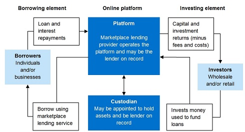

Two-sided Market Integration Platform Applied to Investments
EU Commission Expert Group on Venture Philanthropy & Social Investment
20170922 - Brussels (Belgium)
Jorge Cortell | @jorgecortell
Founder & CEO @kanteron

Two-sided Market
Integration Platforms
Examples from other industries

| WHAT'S NEEDED | NEXT STEPS |
|---|---|
| Discovery | Market neeed/fit study |
| Design | Multi-stakeholder workforce |
| Delivery | Programming & launching |